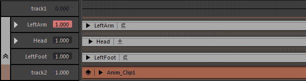

打开“片段层”(Clip Layer)上下文菜单
- 在时间编辑器(Time Editor)中，单击“片段层”(Clip Layer)上的“层”(Layer)图标
 以展开其层，然后在层上单击鼠标右键。
以展开其层，然后在层上单击鼠标右键。
注： 时间编辑器不支持动画层。相反，使用时间编辑器片段层可改变现有片段上的动画。
注： 层片段具有两个不同的上下文菜单，具体取决于您是在“层”(Layer)属性还是在“片段层”(Clip Layer)上单击鼠标右键。请参见层属性上下文菜单

- 设置关键帧(Set Key)
- 在活动层上设置关键帧。
根据在视口中所做的选择，将为通道盒的不同属性设置关键帧。
- 未选择任何对象(Nothing selected)：为层中的所有属性设置关键帧
- 选定对象(Objects selected)：为选定对象的所有属性设置关键帧
- 选定通道盒属性(Channel Box attributes select)：仅为与在通道盒中所做的选择匹配的活动层属性设置关键帧
- 重命名...(Rename...)
- 打开一个窗口，您可以在其中为选定片段层输入其他名称。
- 设置为可设置关键帧的层(Set as Keyable Layer)
- 用于使选定片段层能够接受设置关键帧。
- 选择所有节点(Select all Nodes)
- 用于在节点编辑器中选择关联的名单节点，以便使用自定义的依存关系图 (DG) 网络驱动片段层属性输入。
- 为此，请选择此选项，打开节点编辑器，单击输入和输出连接按钮，然后按 F 键找到名单节点。
注： 请注意，在按输入和输出连接按钮或取消选择节点之前，不要意外单击节点编辑器或时间编辑器的空白区域。
-
如果在片段层上单击鼠标右键的同时选择此选项
- 关联的片段层名单节点的所有属性均会选中。此操作将选择与片段层节点关联的每个属性。
-
如果在时间编辑器名单中的片段层属性上单击鼠标右键的同时选择此选项
- 此属性的关联名单节点均会选中。此操作仅选择选定的属性节点。
- 编辑
-
- 创建覆盖(Create Override)
- 将选定对象的“覆盖层”(Override Layer)添加到时间编辑器。请参见将片段层添加到时间编辑器。
- 创建相加(Create Additive)
- 将选定对象的“相加层”(Additive Layer)添加到时间编辑器。请参见将片段层添加到时间编辑器。
- 删除层(Delete Layer)
- 删除选定片段层和所有关联的动画曲线。请参见删除或清空片段层。
- 展平层(Flatten Layers)
-

- 将选定片段的所有片段层合并为一个层。请参见在层片段上设置关键帧。
注： 必须具有多个片段层才能展平层。
- 选择
-
- 添加当前选择(Add Selection)
- 将选定对象的属性添加到选定片段层。
- 移除当前选择(Remove Selection)
- 从选定片段层中移除选定对象的所有属性。这有助于清理与当前未设置关键帧的属性混杂在一起的片段层。
- 模式(Mode)
- 设置主片段层模式。（详细信息请参见动画层模式）。从下列选项中选择：
- 相加(Additive)
- 将层设定为“相加”(Additive)模式。
- 相加覆盖(Additive Override)
- 将片段层设置为“相加覆盖”(Additive Override)模式。
- 覆盖(Override)
- 将结果层设定为“覆盖”(Override)模式。
- 覆盖穿过(Override Passthrough)
- 将片段层设置为覆盖-穿过(Override-Passthrough)模式。
- 禁用/单放(Mute/Solo)
- 您可以设置一个片段层，使其效果在播放片段时可见或隐藏。
-
- 禁用/取消禁用层(Mute/Unmute Layer)
- 用于暂时禁用/激活片段层，防止其随片段一起播放。
- 单放层/撤消层单放(Solo Layer/Undo Layer Soloing)
- 用于隔离片段层，以便播放其效果。